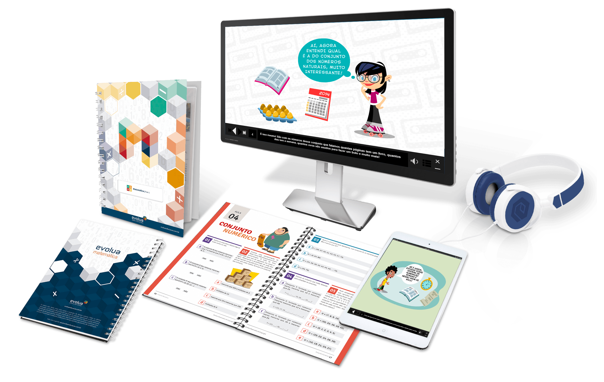

-
Plano Administrativo
Os documentos constituem os dados e informações. Estes podem ser contábeis, fiscais, legais, trabalhistas, previdenciários, entre outros..
-
Plano de Marketing
Os 4 pontos principais de um plano de marketing:
1- Análise da situação da empresa
Para iniciar um plano, devemos entender a situação atual da empresa. A análise deve compreender como os fatores internos e externos influenciam os negócios. Usualmente, a ferramenta usada para isso é a matriz SWOT, que determina as forças, fraquezas, oportunidades e ameaças em relação ao seu negócio.
2- Entenda seu público-alvo
Reúna informações que vão muito além de idade, gênero e classe social. É preciso identificar seus potenciais clientes, conhecendo suas características e rotinas, os problemas que enfrentam diariamente e como seu produto ou serviço poderá ajudá-los. Crie as chamadas personas: uma personagem fictícia que retrata os valores, hábitos, crenças e costumes de seus clientes. Confira em nosso blog: Como criar uma persona a partir da pesquisa de público-alvo
3- Estude a concorrência
Conhecer a concorrência permite entender como os demais players estão se posicionando para que você possa se diferenciar e mostrar todo valor de seus produtos ou serviços para seus clientes, com um posicionamento que se encaixe nas características de suas personas. Este e-book da MindMiners pode ajudar muito nesse momento: Como conhecer e analisar os concorrentes da sua empresa
4- Defina as ações relativas dos 4 Ps do mix de marketing
Com todas essas informações bem definidas, será preciso determinar as melhores ações para atender às necessidades de seus clientes em relação a: Produto, Preço, Praça e Promoção
Abaixo segue alguns exemplos de material para divulgação da empresa. -
Plano de Financeiro
Como fazer um planejamento financeiro de uma empresa em 6 passos Não há como fazer uma boa gestão financeira sem planejamento. Confira um passo a passo:
1- Organize seus documentos e registros Antes de realizar um grande planejamento financeiro, é preciso criar um histórico para análise de como andam as contas na sua empresa. É por isso que todos os documentos e registros financeiros, incluindo os de contas a pagar e receber, devem ser guardados e de uma maneira organizada. O monitoramento dos registros e ações na empresa deve ser constante e trabalhado no dia a dia, desde os primeiros passos no mercado. Somente assim, com dados concretos, será possível acompanhar o fluxo de caixa e o crescimento do negócio, analisando eventuais oportunidades ou dificuldades a serem enfrentadas pela frente. 2- Prepare-se para o planejamento anual Realizar um planejamento anual é imprescindível e, quanto antes você se preparar, melhor programado estará para os desafios do ano seguinte. Se possível, antes mesmo das festas de fim de ano, pare para traçar um plano de ação para a sua empresa, baseado em objetivos, ações e cronogramas. Você não precisa ter certeza do que virá a seguir, mas, se consultar os históricos e as contas, os indicadores financeiros (fluxo de caixa, capital de giro, controle de contas a pagar e receber, controle de inadimplência, demonstrativo de resultados, entre tantos outros), poderá se antecipar para diferentes cenários. Trabalhar com possibilidades é importante. Portanto projete um planejamento para uma situação não somente em casos onde o cenário é positivo como também negativo. Momento de crise? Aumento de demanda? Estagnação? Ao definir ações para cada situação, você estará criando um planejamento anual ainda mais completo. 3- Apoie-se em metodologias para entender sua empresa Algumas metodologias podem auxiliar no processo de descoberta e entendimento da empresa. Uma das mais conhecidas é a análise SWOT, que define forças, oportunidades, fraquezas e ameaças. Outro é o chamado “Ciclo PDCA”, que incentiva um planejamento baseado não só em planejar (PLAN), mas também em fazer (DO), checar (CHECK) e agir (ACT). Afinal, o planejamento sempre acontece como uma estratégia para alcançar um objetivo, uma ação final. Essa ação pode ser a busca por aumento nos ganhos ou no número de clientes, a redução de custos, os cortes em despesas ou outro objetivo pautado pela área financeira. Com base em metodologias como o PDCA, portanto, você pode primeiramente pensar em metas, começar a realizar e, se eventualmente algo não saiu como o esperado, é importante checar e analisar o que houve para depois corrigir processos da maneira mais adequada. O “agir”, nesse caso, poderá sempre ser modificado, os planos ajustados com base em análises e planejamentos anteriores. 4- Controle e reduza gastos Você pode até achar que já controla os gastos da sua empresa, mas será que não há como melhorar? Para começar, é importante garantir que não há mistura de valores pessoais e empresariais, pois isso pode afetar a percepção real dos resultados da empresa no futuro. Existem inúmeros controles financeiros que também são necessários para atingir as metas da empresa com base em informações sólidas. O fluxo de caixa é o principal e pode ser organizado em uma planilha e sempre que possível apresentado em relatórios mensais. O que é despesa? O que é receita? Ao classificar os números diariamente, você começa a criar uma rotina de planejamento para a sua empresa. E como a redução de gastos sempre é possível, você poderá se basear em controles financeiros para encontrar maneiras de economizar e ao mesmo tempo investir naquilo que traga mais resultados. 5- Envolva sua equipe Uma empresa não vai para frente se não contar com o apoio de outros colaboradores, e é por isso que envolver sua equipe no planejamento é essencial. Você pode até ser o responsável por tomar as decisões estratégicas e determinar as melhores maneiras de conseguir um objetivo. Mas em alguns momentos os controles devem ser compartilhados com quem também faz parte do negócio, como é o caso do controle de estoque alinhado à equipe de vendas. Manter a empresa saudável internamente também poderá fazer a diferença nos negócios. 6- Apoie-se em tecnologias para se organizar Existem inúmeras plataformas que auxiliam gestores a realizar o controle financeiro da empresa. As ferramentas on-line, mais assertivas e automatizadas, são as responsáveis por organizar históricos de saídas e entradas (sem correr o risco que falte algum número), gerar relatórios em tempo real se preciso, controlar a emissão de responsabilidades fiscais (como as notas emitidas), e assim por diante. Apoiar-se em uma dessas tecnologias, portanto, pode ser a chave para você se organizar na gestão empresarial e focar na parte estratégica do planejamento financeiro de sua empresa. E então, está pronto para começar? Este post foi escrito pela equipe da Nfe.io, um sistema de emissão e controle de notas fiscais que automatiza tarefas chatas e faz sua empresa ganhar tempo, performance e diminuir custos. -
Plano Operacional
O planejamento operacional (pt-BR) ou planeamento operacional (pt) é a formalização dos objetivos e procedimentos a seguir, principalmente através de documentos escritos das metodologias de desenvolvimento é implantações estabelecidas é é desenvolvido pelos gerentes de primeira linha (supervisores, gerentes de departamento, etc...). É também uma componente dos planos de marketing, e é um documento bastante útil na gestão de projetos. Planejar, ou fazer planos, consiste basicamente é estabelecer o que fazer, quando fazer, como fazer, quem fazer e em que sequência fazer. É uma atividade que esta presente no dia a dia de qualquer ser humano, embora não de forma estruturada, como se faz necessário quando está em jogo o futuro de uma organização. (BARROS NETO, 2002, p. 87). https://pt.wikipedia.org/wiki/Planejamento_operacional
